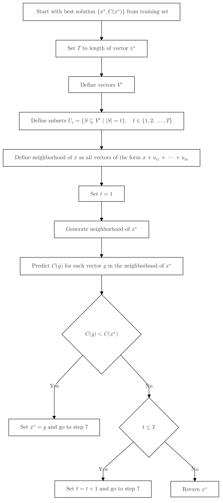

import numpy as np
from itertools import chain, combinations
import sys
from math import comb # Available in Python 3.8 and later
import xgboost as xgb
from functions import calculate_objective
import pickle3 Local search with trained XGBoost regressor model
3.1 Objective
Test the working and performance of a previously trained XGBoost Regressor model in a local search application.
3.2 Background
In previous experiments, we trained an XGBoost Regressor model to predict the objective values of neighboring schedules. In this experiment, we will use the trained models to perform a local search to find the best schedule.
3.3 Hypothesis
The XGBoost Regressor model will be able to efficiently guide the local search algorithm to find a schedule with a lower objective value than the initial schedule.
3.4 Methodology
3.4.1 Tools and Materials
3.4.2 Experimental Design
We will use the trained XGBoost Regressor model to guide a local search algorithm to find the best schedule. The local search algorithm will start with an initial schedule and iteratively explore the neighborhood of the current schedule to find a better one. As an initial schedule, we will use the schedule with the lowest objective value from the training dataset that was used to train the XGBoost Regressor model.
3.4.3 Variables
- Independent Variables:
- The trained XGBoost Regressor model.
- Dependent Variables:
- Speed, accuracy, and convergence of the local search algorithm.
3.4.4 Data Collection
We will use the training dataset to initialize the local search algorithm.
3.4.5 Sample Size and Selection
N = 12 # Number of patients
T = 18 # Number of intervals
d = 5 # Length of each interval
s = [0.0, 0.27, 0.28, 0.2, 0.15, 0.1] # Service times distribution
q = 0.20 # Probability of a scheduled patient not showing up
w = 0.8 # Weight for the waiting time in objective function
num_schedules = 20000 # Number of schedules to sample3.4.6 Experimental Procedure

3.5 Results
3.5.1 Load the initial best schedule.
Start with the best solution found so far \(\{x^*, C(x^*)\}\) from the training set.
# Load the best solution from the training dataset
with open('neighbors_and_objectives.pkl', 'rb') as f:
data = pickle.load(f)
print(f"The data has following keys: {[key for key in data.keys()]}")
# Step 1: Flatten the objectives into a 1D array
flattened_data = [value for sublist in data['objectives'] for value in sublist]
# Step 2: Find the index of the minimum value
min_index = np.argmin(flattened_data)
# Step 3: Convert that index back to the original 2D structure
row_index = min_index // 2 # Assuming each inner list has 2 values
col_index = min_index % 2
print(f"The minimum objective value is at index [{row_index}][{col_index}].\nThis is schedule: {data['neighbors_list'][row_index][col_index]} with objective value {data['objectives'][row_index][col_index]}.")
# Set the initial schedule to the best solution from the training dataset
initial_schedule = data['neighbors_list'][row_index][col_index]
N = sum(initial_schedule)
T = len(initial_schedule)The data has following keys: ['neighbors_list', 'objectives', 'rankings']
The minimum objective value is at index [1197][1].
This is schedule: [3, 1, 2, 1, 1, 2, 0, 1, 0, 0, 0, 0, 0, 0, 0, 0, 0, 1] with objective value 11.154798314469787.3.5.2 Generate the neighborhood of \(x^*\).
3.5.2.1 Set T
Set \(T\) to the length of the vector \(x^*\).
T = len(initial_schedule)3.5.2.2 Define \(V^*\).
Define the vectors \(V^*\) as follows:
$$
\left\{
\begin{array}{c}
\vec{v_1}, \\
\vec{v_2}, \\
\vec{v_3}, \\
\vdots \\
\vec{v_{T-1}}, \\
\vec{v_T} \\
\end{array}
\right\} =
\left\{
\begin{array}{c}
(-1, 0,...., 0, 1), \\
(1, -1, 0,...., 0), \\
(0, 1, -1,...., 0), \\
\vdots \\
(0,...., 1, -1, 0), \\
(0,...., 0, 1, -1) \\
\end{array}
\right\}
$$def get_v_star(t):
# Create an initial vector 'u' of zeros with length 't'
u = np.zeros(t, dtype=int)
# Set the first element of vector 'u' to -1
u[0] = -1
# Set the last element of vector 'u' to 1
u[-1] = 1
# Initialize the list 'v_star' with the initial vector 'u'
v_star = [u]
# Loop over the length of 'u' minus one times
for i in range(len(u) - 1):
# Append the last element of 'u' to the front of 'u'
u = np.append(u[-1], u)
# Remove the last element of 'u' to maintain the same length
u = np.delete(u, -1)
# Append the updated vector 'u' to the list 'v_star'
v_star.append(u)
# Convert the list of vectors 'v_star' into a NumPy array and return it
return(np.array(v_star))
# Example of function call:
# This will create a 4x4 matrix where each row is a cyclically shifted version of the first row
get_v_star(4)array([[-1, 0, 0, 1],
[ 1, -1, 0, 0],
[ 0, 1, -1, 0],
[ 0, 0, 1, -1]])3.5.2.3 Define \(U_t\).
Define \(U_t\) as the set of all possible subsets of \(V^*\) such that each subset contains exactly \(t\) elements, i.e.,
\[ U_t = \{ S \subsetneq V^* \mid |S| = t \}, \quad t \in \{1, 2, \dots, T\}. \]
def powerset(iterable, size=1):
"powerset([1,2,3], 2) --> (1,2) (1,3) (2,3)"
return [[i for i in item] for item in combinations(iterable, size)]
x = initial_schedule
# Generate a matrix 'v_star' using the 'get_v_star' function
v_star = get_v_star(T)
# Generate all possible non-empty subsets (powerset) of the set {0, 1, 2, ..., t-1}
# 'ids' will be a list of tuples, where each tuple is a subset of indices
size = 2
ids = powerset(range(T), size)
len(ids)
ids[:T][[0, 1],
[0, 2],
[0, 3],
[0, 4],
[0, 5],
[0, 6],
[0, 7],
[0, 8],
[0, 9],
[0, 10],
[0, 11],
[0, 12],
[0, 13],
[0, 14],
[0, 15],
[0, 16],
[0, 17],
[1, 2]]3.5.2.4 Define the neighborhood of \(x\)
Define the neighborhood of \(x\) as all vectors of the form \(x + u_{tk}\) with \(\forall\, u_{tk} \in U_t\).
v_star = get_v_star(T)
def get_neighborhood(x, v_star, ids, verbose=False):
x = np.array(x)
p = 50
if verbose:
print(f"Printing every {p}th result")
# Initialize the list 'neighborhood' to store the vectors in the neighborhood of 'x'
neighborhood = []
# Loop over all possible non-empty subsets of indices
for i in range(len(ids)):
# Initialize the vector 'neighbor' to store the sum of vectors in 'v_star' corresponding to the indices in 'ids[i]'
neighbor = np.zeros(len(x), dtype=int)
# Loop over all indices in 'ids[i]'
for j in range(len(ids[i])):
if verbose:
print(f"v_star{[ids[i][j]]}: {v_star[ids[i][j]]}")
# Add the vector in 'v_star' corresponding to the index 'ids[i][j]' to 'neighbor'
neighbor += v_star[ids[i][j]]
# Append the vector 'x' plus 'neighbor' to the list 'neighborhood'
x_n = x + neighbor
if i%p==0:
if verbose:
print(f"x, x', delta:\n{x},\n{x_n},\n{neighbor}\n----------------- ")
neighborhood.append(x_n)
# Convert the list 'neighborhood' into a NumPy array
neighborhood = np.array(neighborhood)
if verbose:
print(f"Size of raw neighborhood: {len(neighborhood)}")
# Create a mask for rows with negative values
mask = ~np.any(neighborhood < 0, axis=1)
# Filter out rows with negative values using the mask
if verbose:
print(f"filtered out: {len(neighborhood)-mask.sum()} schedules with negative values.")
filtered_neighborhood = neighborhood[mask]
if verbose:
print(f"Size of filtered neighborhood: {len(filtered_neighborhood)}")
return filtered_neighborhood
# Example of function call:
# This will generate the neighborhood of the vector 'x' using the vectors in 'v_star' and the indices in 'ids'
test_nh = get_neighborhood(x, v_star, ids)
print(f"All neighborhoods with {size} patients switched:\n x = {np.array(x)}: \n {test_nh}")All neighborhoods with 2 patients switched:
x = [3 1 2 1 1 2 0 1 0 0 0 0 0 0 0 0 0 1]:
[[3 0 2 1 1 2 0 1 0 0 0 0 0 0 0 0 0 2]
[2 2 1 1 1 2 0 1 0 0 0 0 0 0 0 0 0 2]
[2 1 3 0 1 2 0 1 0 0 0 0 0 0 0 0 0 2]
[2 1 2 2 0 2 0 1 0 0 0 0 0 0 0 0 0 2]
[2 1 2 1 2 1 0 1 0 0 0 0 0 0 0 0 0 2]
[2 1 2 1 1 2 1 0 0 0 0 0 0 0 0 0 0 2]
[2 1 2 1 1 2 0 1 0 0 0 0 0 0 0 0 1 1]
[4 1 1 1 1 2 0 1 0 0 0 0 0 0 0 0 0 1]
[4 0 3 0 1 2 0 1 0 0 0 0 0 0 0 0 0 1]
[4 0 2 2 0 2 0 1 0 0 0 0 0 0 0 0 0 1]
[4 0 2 1 2 1 0 1 0 0 0 0 0 0 0 0 0 1]
[4 0 2 1 1 2 1 0 0 0 0 0 0 0 0 0 0 1]
[4 0 2 1 1 2 0 1 0 0 0 0 0 0 0 0 1 0]
[3 2 2 0 1 2 0 1 0 0 0 0 0 0 0 0 0 1]
[3 2 1 2 0 2 0 1 0 0 0 0 0 0 0 0 0 1]
[3 2 1 1 2 1 0 1 0 0 0 0 0 0 0 0 0 1]
[3 2 1 1 1 2 1 0 0 0 0 0 0 0 0 0 0 1]
[3 2 1 1 1 2 0 1 0 0 0 0 0 0 0 0 1 0]
[3 1 3 1 0 2 0 1 0 0 0 0 0 0 0 0 0 1]
[3 1 3 0 2 1 0 1 0 0 0 0 0 0 0 0 0 1]
[3 1 3 0 1 2 1 0 0 0 0 0 0 0 0 0 0 1]
[3 1 3 0 1 2 0 1 0 0 0 0 0 0 0 0 1 0]
[3 1 2 2 1 1 0 1 0 0 0 0 0 0 0 0 0 1]
[3 1 2 2 0 2 1 0 0 0 0 0 0 0 0 0 0 1]
[3 1 2 2 0 2 0 1 0 0 0 0 0 0 0 0 1 0]
[3 1 2 1 2 1 1 0 0 0 0 0 0 0 0 0 0 1]
[3 1 2 1 2 1 0 1 0 0 0 0 0 0 0 0 1 0]
[3 1 2 1 1 3 0 0 0 0 0 0 0 0 0 0 0 1]
[3 1 2 1 1 2 1 0 0 0 0 0 0 0 0 0 1 0]
[3 1 2 1 1 2 0 1 0 0 0 0 0 0 0 1 0 0]]3.5.3 Local search algorithm
1. Generate the neighborhood of $x^*$.
2. For each vector $y$ in the neighborhood of $x^*$:
a. Predict $C(y)$.
b. If $C(y) < C(x^*)$, set $x^* = y$ and go to 1
3. Return $x^*$.def local_search_predicted(x, v_star, regressor, size=2):
# Initialize the best solution found so far 'x_star' to the input vector 'x'
x_star = np.array(x).flatten() # Keep as 1D array
# Initialize the best cost found so far 'C_star' to the cost of the input vector 'x'
x_star_dmatrix = xgb.DMatrix(x_star.reshape(1, -1))
c_star = regressor.predict(x_star_dmatrix)[0]
# Set the value of 'T' to the length of the input vector 'x'
T = len(x_star)
# Loop over all possible values of 't'
for t in range(1, size):
print(f'Running local search {t}')
# Generate the neighborhood of the current best solution 'x_star' with 't' patients switched
ids = powerset(range(T), t)
neighborhood = get_neighborhood(x_star, v_star, ids)
print(f"Switching {t} patient(s). Size of neighborhood: {len(ids)}")
for neighbor in neighborhood:
neighbor_dmatrix = xgb.DMatrix(neighbor.reshape(1, -1))
cost = regressor.predict(neighbor_dmatrix)
if cost < c_star:
x_star = neighbor
c_star = cost
result = [int(x) for x in x_star] # Convert x_star to list of integers
objectives = calculate_objective(result, s, d, q)
objective_value = w * objectives[0] + (1 - w) * objectives[1]
print(f"Found better solution: {x_star}, pred_cost: {c_star}, real_cost: {objective_value}")
# Return the best solution found 'x_star' as 1D array
return x_star, c_star, objective_valuedef local_search(x, v_star, size=2):
# Initialize the best solution found so far 'x_star' to the input vector 'x'
x_star = np.array(x).flatten() # Keep as 1D array
# Calculate initial objectives and cost
objectives_star = calculate_objective(x_star, s, d, q)
c_star = w * objectives_star[0] + (1 - w) * objectives_star[1]
# Set the value of 'T' to the length of the input vector 'x'
T = len(x_star)
# Loop over all possible values of 't'
for t in range(1, size):
print(f'Running local search {t}')
# Generate the neighborhood of the current best solution 'x_star' with 't' patients switched
ids = powerset(range(T), t)
neighborhood = get_neighborhood(x_star, v_star, ids)
print(f"Switching {t} patient(s). Size of neighborhood: {len(ids)}")
for neighbor in neighborhood:
# Calculate objectives for the neighbor
objectives = calculate_objective(neighbor, s, d, q)
cost = w * objectives[0] + (1 - w) * objectives[1]
# Compare scalar costs
if cost < c_star:
x_star = neighbor
c_star = cost
print(f"Found better solution: {x_star}, cost: {c_star}")
# Return the best solution found 'x_star' and its cost
return x_star, c_star3.5.4 Run the local search algorithm
# Example of using the local search algorithm with a regressor model
# Load regressor model
regressor = xgb.Booster()
regressor.load_model("models/regressor.json")
test = local_search_predicted(initial_schedule, v_star, regressor, T)
print(test)
print(f"Best solution found: {test[0]}, with predicted cost: {test[1]} and real cost: {test[2]}")Running local search 1
Switching 1 patient(s). Size of neighborhood: 18
Found better solution: [2 1 2 1 1 2 0 1 0 0 0 0 0 0 0 0 0 2], pred_cost: [7.7052813], real_cost: 7.660096612108859
Running local search 2
Switching 2 patient(s). Size of neighborhood: 153
Found better solution: [1 2 1 1 1 2 0 1 0 0 0 0 0 0 0 0 0 3], pred_cost: [6.8521957], real_cost: 8.912169065349131
Found better solution: [1 1 2 1 1 2 0 1 0 0 0 0 0 0 0 0 1 2], pred_cost: [4.8244953], real_cost: 5.446127674818565
Running local search 3
Switching 3 patient(s). Size of neighborhood: 816
Found better solution: [1 1 1 1 1 2 0 1 0 0 0 0 0 0 0 0 1 3], pred_cost: [4.219187], real_cost: 6.811261644800006
Found better solution: [1 0 2 1 1 2 0 1 0 0 0 0 0 0 0 0 2 2], pred_cost: [4.178016], real_cost: 7.903520716226568
Found better solution: [0 2 1 1 1 2 0 1 0 0 0 0 0 0 0 1 0 3], pred_cost: [4.011073], real_cost: 8.912169065349127
Found better solution: [0 2 1 1 1 2 0 1 0 0 0 0 0 0 0 0 2 2], pred_cost: [3.7777016], real_cost: 7.894940461957126
Found better solution: [0 1 2 1 1 2 0 1 0 0 0 0 0 0 0 1 1 2], pred_cost: [3.339848], real_cost: 5.446127674818565
Running local search 4
Switching 4 patient(s). Size of neighborhood: 3060
Found better solution: [0 1 1 1 1 2 0 1 0 0 0 0 0 0 1 0 1 3], pred_cost: [2.5395162], real_cost: 6.811261644800006
Found better solution: [0 1 1 1 1 2 0 1 0 0 0 0 0 0 0 1 2 2], pred_cost: [1.1575596], real_cost: 5.794033041408006
Running local search 5
Switching 5 patient(s). Size of neighborhood: 8568
Running local search 6
Switching 6 patient(s). Size of neighborhood: 18564
Found better solution: [0 1 0 1 1 2 0 1 0 0 0 0 0 0 1 1 2 2], pred_cost: [1.062134], real_cost: 5.794033041408006
Running local search 7
Switching 7 patient(s). Size of neighborhood: 31824
Found better solution: [0 1 0 2 1 1 0 1 0 1 0 0 0 0 0 1 2 2], pred_cost: [0.4633214], real_cost: 6.260557201408006
Found better solution: [0 1 0 1 2 1 1 0 0 1 0 0 0 0 0 1 2 2], pred_cost: [0.3822482], real_cost: 6.260557201408006
Found better solution: [0 1 0 1 1 2 1 0 0 1 0 0 0 0 0 1 3 1], pred_cost: [0.17397752], real_cost: 8.312152662016008
Found better solution: [0 1 0 1 1 2 0 1 0 1 0 0 0 0 0 2 2 1], pred_cost: [0.04072012], real_cost: 6.281370480803847
Running local search 8
Switching 8 patient(s). Size of neighborhood: 43758
Found better solution: [0 1 0 1 1 2 0 2 0 1 0 0 0 0 0 1 2 1], pred_cost: [-0.18848653], real_cost: 5.268951040000005
Running local search 9
Switching 9 patient(s). Size of neighborhood: 48620
Running local search 10
Switching 10 patient(s). Size of neighborhood: 43758
Running local search 11
Switching 11 patient(s). Size of neighborhood: 31824
Running local search 12
Switching 12 patient(s). Size of neighborhood: 18564
Running local search 13
Switching 13 patient(s). Size of neighborhood: 8568
Found better solution: [0 1 0 1 1 1 1 1 0 1 0 1 0 0 0 1 2 1], pred_cost: [-0.18908274], real_cost: 2.030551040000001
Running local search 14
Switching 14 patient(s). Size of neighborhood: 3060
Running local search 15
Switching 15 patient(s). Size of neighborhood: 816
Found better solution: [0 1 0 1 1 0 1 1 1 1 0 1 0 0 0 1 2 1], pred_cost: [-0.5040771], real_cost: 2.030551040000001
Running local search 16
Switching 16 patient(s). Size of neighborhood: 153
Running local search 17
Switching 17 patient(s). Size of neighborhood: 18
(array([0, 1, 0, 1, 1, 0, 1, 1, 1, 1, 0, 1, 0, 0, 0, 1, 2, 1]), array([-0.5040771], dtype=float32), 2.030551040000001)
Best solution found: [0 1 0 1 1 0 1 1 1 1 0 1 0 0 0 1 2 1], with predicted cost: [-0.5040771] and real cost: 2.030551040000001# Computing optimun solution with real cost
print(f"Initial schedule: {test[0]}")
test_x = local_search(test[0], v_star, T)
test_x_pred = np.array(test_x[0]).flatten() # Keep as 1D array
test_x_pred_dmatrix = xgb.DMatrix(test_x_pred.reshape(1, -1))
test_c_star_pred = regressor.predict(test_x_pred_dmatrix)[0]
print(f"Best solution found: {test_x [0]}, with true cost: {test_x [1]}, and predicted cost: {test_c_star_pred}")Initial schedule: [0 1 0 1 1 0 1 1 1 1 0 1 0 0 0 1 2 1]
Running local search 1
Switching 1 patient(s). Size of neighborhood: 18
Running local search 2
Switching 2 patient(s). Size of neighborhood: 153
Found better solution: [0 1 0 1 1 0 1 1 1 1 0 1 0 0 1 1 1 1], cost: 0.0
Running local search 3
Switching 3 patient(s). Size of neighborhood: 816
Running local search 4
Switching 4 patient(s). Size of neighborhood: 3060
Running local search 5
Switching 5 patient(s). Size of neighborhood: 8568
Running local search 6
Switching 6 patient(s). Size of neighborhood: 18564
Running local search 7
Switching 7 patient(s). Size of neighborhood: 31824
Running local search 8
Switching 8 patient(s). Size of neighborhood: 43758
Running local search 9
Switching 9 patient(s). Size of neighborhood: 48620
Running local search 10
Switching 10 patient(s). Size of neighborhood: 43758
Running local search 11
Switching 11 patient(s). Size of neighborhood: 31824
Running local search 12
Switching 12 patient(s). Size of neighborhood: 18564
Running local search 13
Switching 13 patient(s). Size of neighborhood: 8568
Running local search 14
Switching 14 patient(s). Size of neighborhood: 3060
Running local search 15
Switching 15 patient(s). Size of neighborhood: 816
Running local search 16
Switching 16 patient(s). Size of neighborhood: 153
Running local search 17
Switching 17 patient(s). Size of neighborhood: 18
Best solution found: [0 1 0 1 1 0 1 1 1 1 0 1 0 0 1 1 1 1], with true cost: 0.0, and predicted cost: 0.187968522310256963.6 Discussion
Analyze your results in this section. Discuss whether your hypothesis was supported, what the results mean, and the implications for future work. Address any anomalies or unexpected findings, and consider the broader impact of your results.
3.7 Timeline
Document the duration and key dates of the experiment. This helps in project management and reproducibility.
3.8 References
Cite all sources that informed your experiment, including research papers, datasets, and tools. This section ensures that your work is properly grounded in existing research and that others can trace the origins of your methods and data.s